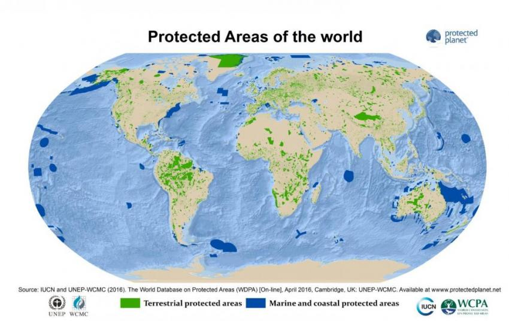

A protected area is a clearly defined geographical space, recognised, dedicated and managed, through legal or other effective means, to achieve the long term conservation of nature with associated ecosystem services and cultural values. (IUCN Definition 2008)

Protected areas – national parks, wilderness areas, community conserved areas, nature reserves and so on – are a mainstay of biodiversity conservation, while also contributing to people’s livelihoods, particularly at the local level. Protected areas are at the core of efforts towards conserving nature and the services it provides us – food, clean water supply, medicines and protection from the impacts of natural disasters. Their role in helping mitigate and adapt to climate change is also increasingly recognized; it has been estimated that the global network of protected areas stores at least 15% of terrestrial carbon.
Helping countries and communities designate and manage systems of protected areas on land and in the oceans, is one of IUCN’s main areas of expertise. Together with species conservation, this has been a key focus of attention of IUCN’s work and of a vast majority of IUCN Member organizations. Effectively managed systems of protected areas have been recognized as critical instruments in achieving the objectives of the Convention on Biological Diversity and the Sustainable Development Goals.
Protected areas directly address the primary driver of extinction, habitat loss, which threatens over 80 percent of species at risk in Ontario and around the world.
Protected areas established and managed by or in cooperation with Indigenous peoples address the interconnectedness of all life and offer opportunities for hunting, fishing, gathering and low-impact economic development while advancing shared conservation objectives and responsibilities.
Protected areas help to mitigate extreme weather events, enhance carbon storage, and provide space for plants and animals to adapt to a changing climate.
Protected areas provide clean air and water, healthy soils, wild foods and medicines.
Protected areas are cherished places for physical, mental and spiritual rejuvenation.
Protected areas provide employment opportunities and contribute billions of dollars to the Canadian economy every year.
Protected areas are gateways to the landscapes that have sustained, inspired and defined us who share this land we call Canada.
Protected areas serve as environmental benchmarks for monitoring the health of natural systems and understanding the effects of climate change, pollution, resource extraction, invasive species and other stressors.
Every year, millions of visitors enjoy camping, hiking, swimming, canoeing and other outdoor activities in Ontario’s parks and conservation reserves.
A representative system of protected areas that helps to preserve diverse gene pools can maintain future options for research and adaptation in the face of environmental change.